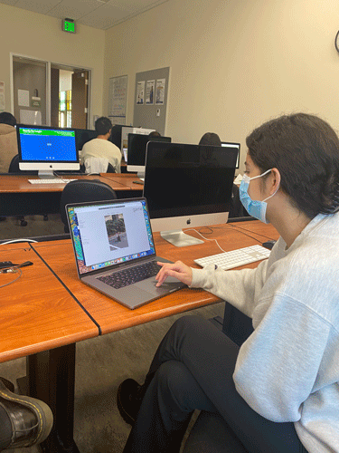
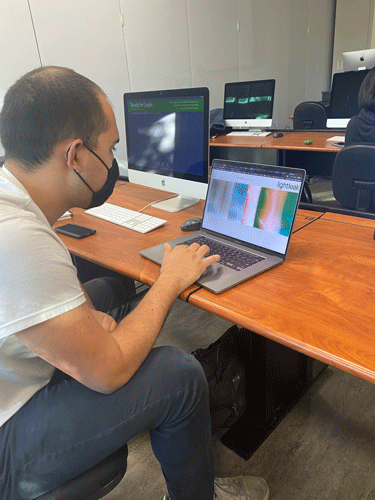
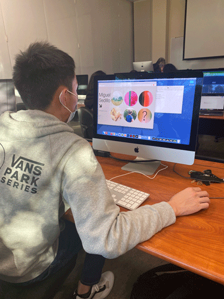

usertest 1: alessandra
During Alessandra's testing, the action of clicking the down arrow to display "info" was not immediately apparent, and so she completely ignored it until afterwards when I told her about it. Instead, she thought that it was saying to scroll down. Also, Alessandra's first instinct was to scroll horizontally instead of vertically to navigate the photo slideshow. I will take all of this advice into account and add more scrolling functionality + redesign the down arrow.
usertest 2: adam
Adam and I had similar projects that displayed our photography in slideshows, so we exchanged some helpful and relevant ideas (most notably, a way to enable both vertical and horizontal scrolling on a horizontal slideshow). Adam thought that the "collections" page seemed redundant when compared to the home page, since they serve incredibly similar purposes. Also, he thought that the arrow for info was unclear, and should perhaps be changed to a button saying "info" or something along those lines. He also suggested that I could make the info popup more minimal and less obtrusive on the slideshow.
usertest 3: guan
Guan really enjoyed the filter controls for the images, but he suggested that the phrasing for the instructions could be clearer, like "press 'g' for grayscale" instead of "'g' for grayscale." He also echoed the sentiment that the down arrow for info was vague, and should be changed into something more clear that better communicated its purpose. This issue was echoed throughout all of my user tests, so I will be sure to address it in my final product.